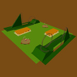

Vytvoøte ve VRML model zábavního parku (tj. scénu) s rùznımi atrakcemi. Prostor pro atrakce (spoleènı pro všechny èleny tımu) nech� je vymodelován jednoduše jako terén s nìkolika cestièkami. Pøipravte nejménì 6 rùznıch stanoviš�, která vhodnì pojmenujte a zorganizujte do posloupnosti urèující plynulou procházku scénou. Dále pøipravte dvojici speciálních stanoviš� pro mìøení fps, umístìnıch blízko vedle sebe tak, aby z nich byla vidìt celá scéna. Pøi pøepínání mezi nimi (PgUp, PgDn) mìøte fps.
Ka�dı èlen tımu vytvoøí model jedné atrakce (viz nabídka modelù), kterı bude vkládán do scény pomocí uzlu Inline. Model mù�e bıt vytvoøen jen ze základních tìles. Pøi návrhu jeho struktury však uva�ujte budoucí rozšíøení o interaktivní chování a vydávání zvukù. Do scény umístìte od ka�dého modelu 2 instance tak, aby všechny modely byly vidìt ze stanoviš� urèenıch k mìøení fps. Dále ke ka�dé instanci pøipravte individuální stanovištì.
